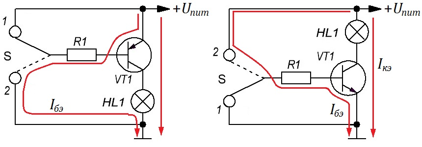

Работа транзистора в качестве ключа

Рис. 1 - Схемы включения транзистора в качестве ключа:
слева - для транзистора p-n-p структуры, справа - для транзистора n-p-n структуры
Пусть переключатель S будет замкнут в положении 1 (рис. 1). При этом база транзистора через резистор R подключена к плюсу питания, поэтому ток между эмиттером и базой отсутствует и транзистор закрыт. Представим, что мы перевели переключатель S в положение 2. Напряжение на базе становится меньше, чем на эмиттере, - появляется ток между эмиттером и базой (его величина определяется сопротивлением R1). Сразу возникает ток коллектор-эмиттер. Транзистор открывается, лампа загорается. Если мы снова вернём переключатель S в положение 1 - транзистор закроется, лампа погаснет. На правой схеме (рис. 1) всё то же самое, только транзистор другой проводимости.
В этом случае говорят, что транзистор работает в качестве ключа. Транзистор переключается между двумя состояниями - открытым и закрытым. При использовании транзистора в качестве ключа стараются, чтобы в открытом состоянии транзистор был близок к насыщению (при этом падение напряжения между коллектором и эмиттером, а значит и потери на транзисторе, - минимальны). Для этого специальным образом рассчитывают ограничительный резистор в цепи базы. Состояний глубокого насыщения и глубокой отсечки обычно стараются избежать, потому что в этом случае увеличивается время переключения ключа из одного состояния в другое.
Пример. Необходимо управлять лампой накаливания 12 В, 50 мА через транзистор. Транзистор у нас работает в качестве ключа, поэтому в открытом состоянии должен быть близок к насыщению. Падение напряжения между коллектором и эмиттером учитывать не будем, поскольку для режима насыщения оно на порядок меньше напряжения питания. Так как через лампу течёт ток 50 мА, то нам нужно выбрать транзистор с Iкэ макс ≥62,5 мА (рекомендуется использовать элементы на 75% от их максимальных параметров). По справочнику ищем подходящий p-n-p транзистор. Например КТ361. В нашем случае по току подходят с буквенными индексами "А — Г ", так как у них Uкэ макс = 20 В, а по условиям 12 В.
Предположим, что использовать будем КТ361А, с коэффициентом усиления от 20 до 90. Так как нам нужно, чтобы транзистор гарантированно открылся полностью, - в расчёте будем использовать минимальный Кус=20.
Рассчитаем минимальный ток между эмиттером и базой Iбэ мин, для обеспечения через коллектор-эмиттер ток 50 мА:
Iбэ мин= 50 мА/ 20 = 2,5 мА.
Рассчитаем номинал токоограничивающего резистора R, чтобы обеспечить ток Iбэ = 2,5 мА:
R=Uпит-Uбэ)/Iбэ мин = (12 В - 0,65 В) / 0,0025 А = 4540 Ом.
Так как 2,5 мА - это минимальный ток, который должен протекать из эмиттера в базу, то нужно выбрать из стандартного ряда ближайший резистор меньшего сопротивления. Например, 4,3 кОм.
Для зажигания лампы с номинальным током 50 мА нам нужно коммутировать ток всего 2,5 мА. И это при использовании транзистора, с низким Кус. Таким образом можно уменьшить габариты выключателей (а значит и их стоимость) при использовании транзисторов.
Источники:
radiohlam.ru - О транзисторах «на пальцах». Часть 1. Биполярные транзисторы